We know that the type of database is different from the type of development language, so we need a bridge, one side is the database type, and the other is the development language type
There is a big difference between the types of SQL supported by different databases, such as DECIMAL in Oracle, Mysql is not, Mysql varchar type corresponds to Oracle is varchar2. Most databases have their own type rules.
Fortunately, the major database vendors are providing their own database jdbc driver, it will follow the jdbc standard, Convert your SQL type to the corresponding jdbc type, which is derived from java.sql.Types.
The following are all types:
ARRAY, BIGINT, BINARY, BIT, BLOB, BOOLEAN, CHAR, CLOB, DATALINK, DATE, DECIMAL, DISTINCT, DOUBLE, FLOAT, INTEGER, JAVA_OBJECT, LONGNVARCHAR, LONGVARBINARY, LONGVARCHAR, NCHAR, NCLOB, NULL, NUMERIC, NVARCHAR, OTHER, REAL, REF, ROWID, SMALLINT, SQLXML, STRUCT, TIME, TIMESTAMP, TINYINT, VARBINARY, VARCHAR
Jmr uses the jdbc type as a standard for mapping reasons: 1. Unified standards do not need to be concerned with different database types, and all types have correspondence in the jdbc type. 2. Just set the corresponding development language mapping type for the jdbc type.
The following is a table in the database, and we can see the types of its different fields.
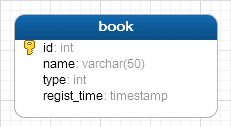
JdbcType is the jdbc type, and Jmr is converted to the following:
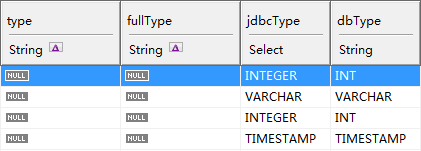
Click Model page --> Select Mapping and Convert --> New Mapping
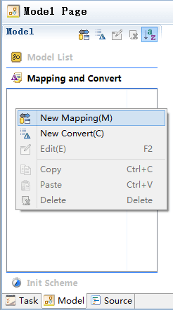
Named type, which is used as a mapping name; double clicking on the right side of the table allows you to fill the mapping type.
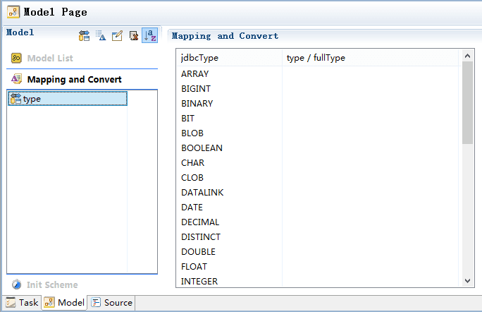
Fill in the type of jdbcType corresponding to your own requirements (this use the Java language as an example and you can use other languages)
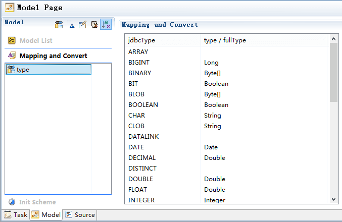
Another new mapping, named fullType, is used to mapping the fullType.
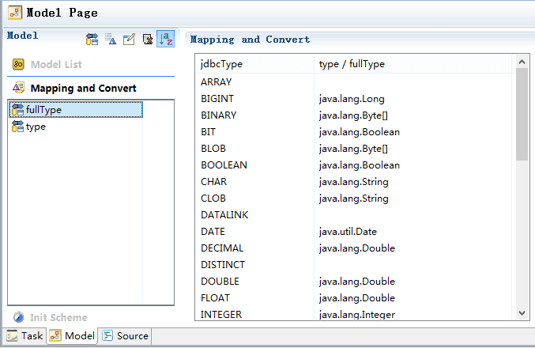
Tip: when editing type, you can use the right button, from left to right: * Search type button: you can search for the types included in your project, only Java type are supported. * Open type button: you can open the type corresponding to the source code, only Java type are supported. * Delete button: delete the type you have entered.
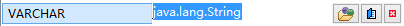
When we configure the mapping, we can use the configured mappings in the model. Click on the icons on model type and fullType.
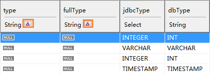
In fullType, for example, we choose the mapping to fullType; click convert, which generates the type based on the value of the jdbcType.
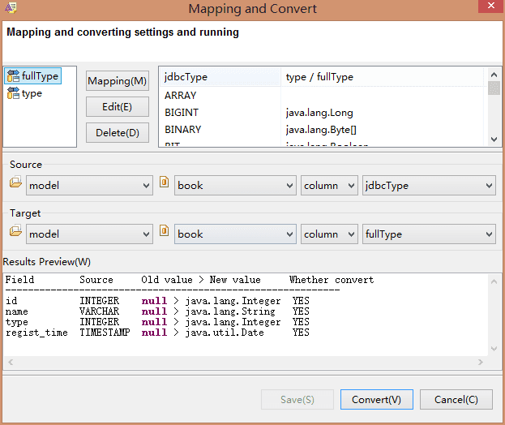
As a result of the convert, you can see that type and fullType have been mapped to complete.
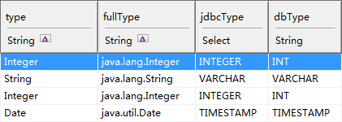
You can complete the mapping in the process of model transform.
Click Model page-->Select Init Scheme-->New Init
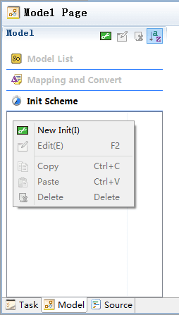
Named init, the init scheme comes with three fields called name, type, and jdbcType.
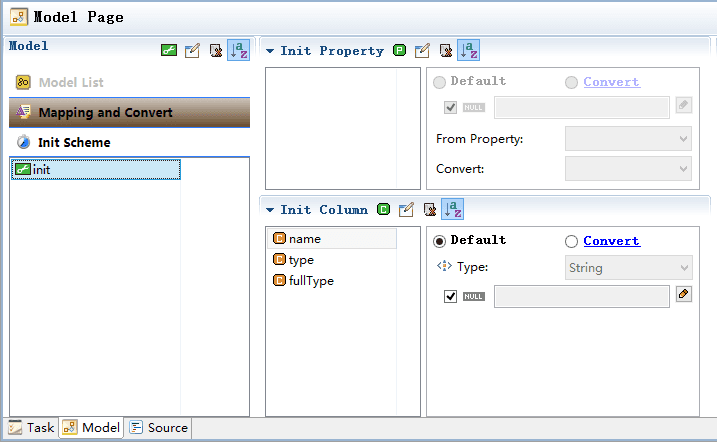
Select type and fullType-->Convert-->From Column: jdbcType, The mapping select type and fullType.
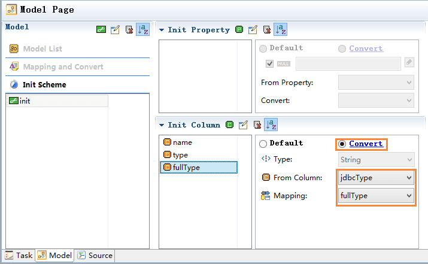
When the model transform, select init
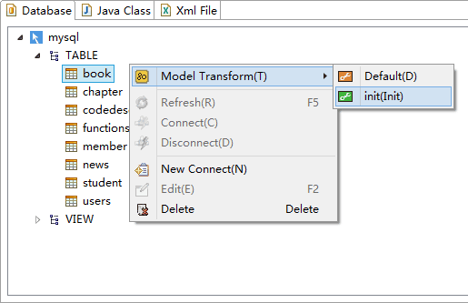
Transform result:
The transform use the Jmr Convert, for example:
Click Model page-->Select Mapping and Convert-->New Convert
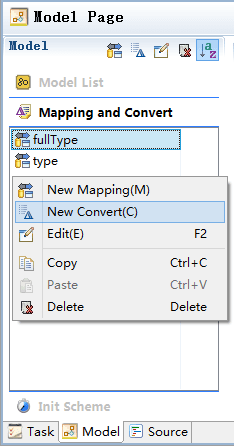
Named headLowerCamel
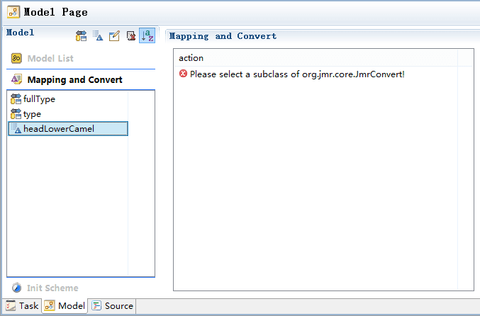
New Jmr Convert, New->Jmr Convert
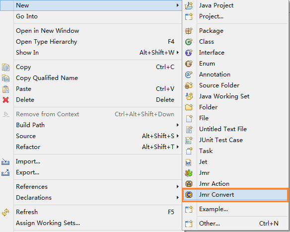
Or, in Other JMR.
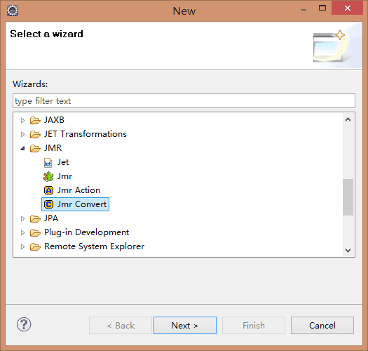
Create a new convert called HeadLowerCamelConvert
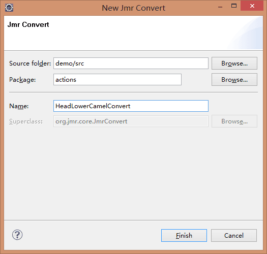
Action inherits from JmrConvert. It has a convert implementation method.
The function of HeadLowerCamelConvert: for example: regist_time -> registTime
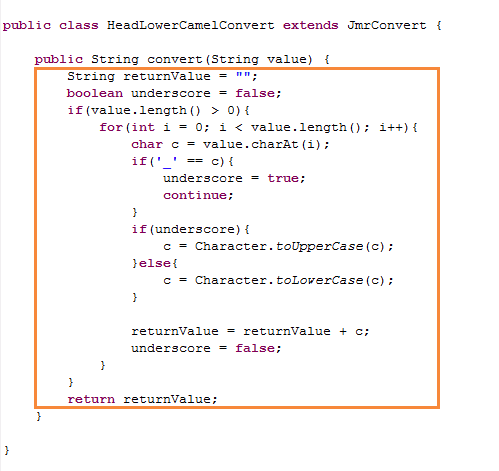
Click the right button to search for Jmr Convert.
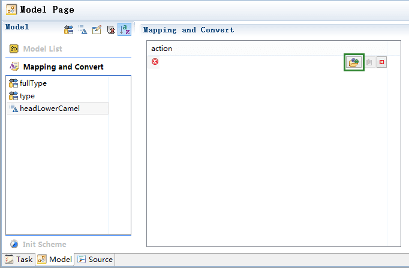
Select HeadLowerCamelConvert.
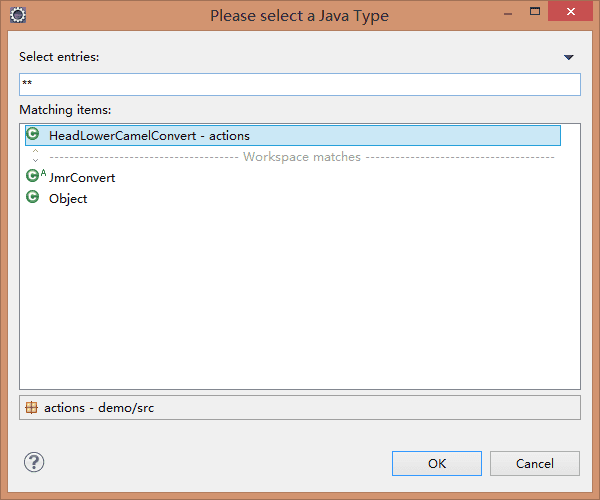
We are configuring another convert, HeadUpperCamelConvert
The function of HeadUpperCamelConvert: for example: book_order -> BookOrder
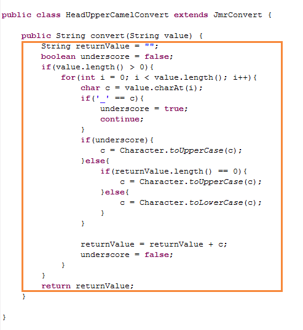
Convert can be used on properties or fields.
We have created a new property named ClassName, which is used as the class name of the java.
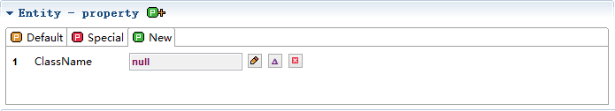
The Java class name are head upper case and camel case, we convert from the name.
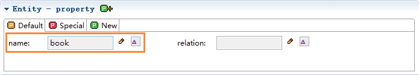
Click Convert Icon
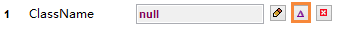
Select headUpperCanelConvert, In the Results Preview, we can see the result of the convert, converted from book to Book. Finally, click Convert.
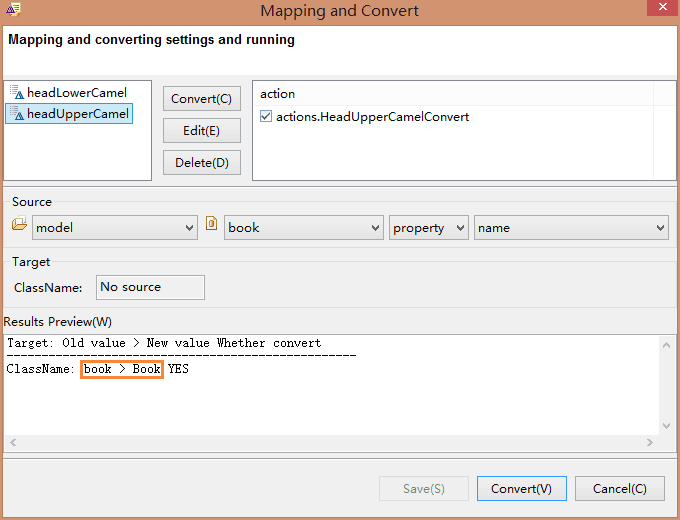
The value of ClassName is Book.
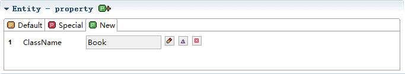
We select name, and name default to the same value as id, but can also be converted.
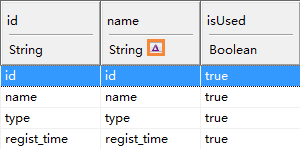
Select headLowerCanelConvert, Source is id, Target is name, In the Results Preview, we can see the result of the convert. Finally, click Convert.
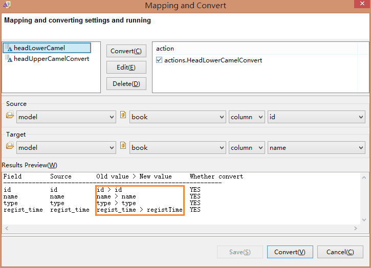
Result
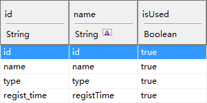
Of course, you can also set convert for new fields, Click to convert.
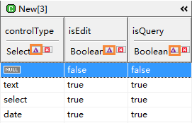
You can complete the convert in the process of model transform.
Click Model page --> Select Init Scheme, select name -->From Column id, select headLowerCamel。
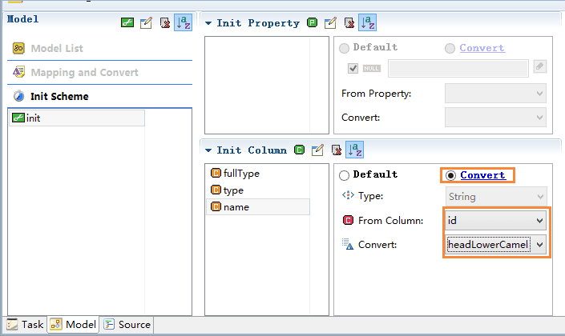
We can also set the convert in the new column, create new column fieldName --> From Column id, select headLowerCamel。
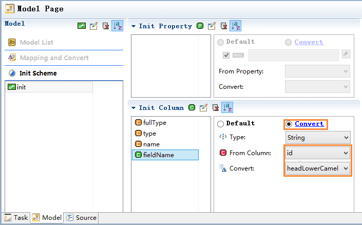
When the model transform, select init.
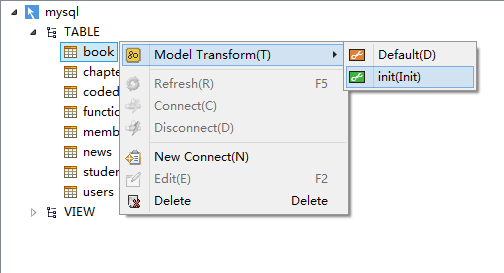
Result
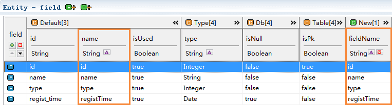